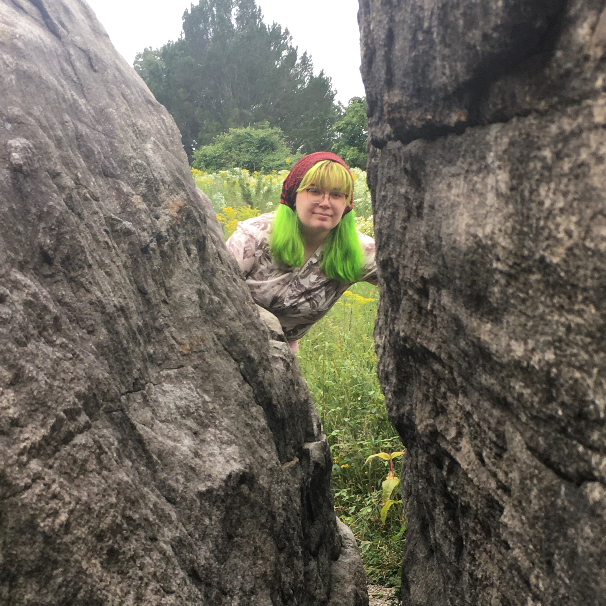

Gil Roberts (Publicity) wants a new piercing! Thats not really related to this show, but her new experience in publicity has allowed her to Photoshop many piercings before she makes a decision. Please let her know what she should get!
Annika Fagerstrom (Lights) walked 8.5 miles today, ( and still looked hot -Sarah Huffman, FCRH 21, Master Carpenter)

Kelvin Buck (Producer) has been wondering for the last month what the verb for summer is. Spring awakens and fall falls, so presumably winter sleeps, but "being awake" isn't a verb, so what does summer do??? They would like to propose that summer simply vibes.
Tara is a senior I guess, but no matter where her class standing is shes very proud to have done props for Spring Awakening. She hopes you finish the show thinking, "Yeah it was good, but those props were fantastic!"
Jack Kennedy (Set) is so excited to share his first set design experience with this awesome cast and crew. Huge shoutout to Sarah and everyone who came to builds! Go vote.
Lucy Skrebutenas (Business Manager) is very good at committing financial crimes, and her favorite crime to commit is tax fraud.
Dylan Hakim (Stage Manager) is thrilled to be working with the Mimes and Mummers again. Thats about it.
Kate Entis (Assistant Stage Manager) is a freshman and is very excited to be a part of her first college theater production. Thanks to everyone in the cast and crew for being so welcoming over these past few weeks. She is very grateful that this is not like high school theater, and can't wait for the future!
Margot Dugan (Assistant Director) is in her first year at Fordham and she is so excited to be a part of this show. It is her second time as an assistant director and shes so excited to share this show. Shes had so much fun hanging out with this cast and is looking forward to many more shows at Fordham!
Becca Lees (Co-Lighting Designer) brought her own wrench
Sarah Huffman (Master Carpenter) is off the record.
Nina Siwik (Thea/Costume Designer) has absolutely loved working with the cast and production team of Spring Awakening. She is a sophomore double majoring in TV/Film and English. She spends her free time taking selfies with the pigeon filter with Sarina Singh and raiding Cables closet for costume pieces. She hopes you enjoy the show as much as shes enjoyed being a part of it!
Griffin LaMarche (Sound Designer, Otto) is so very sad this show does not have a pit. You cant see him after the show due to his strict adherence to COVID-19 regulations, but I guarantee he is crying into a flute.